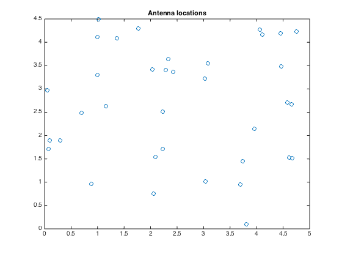
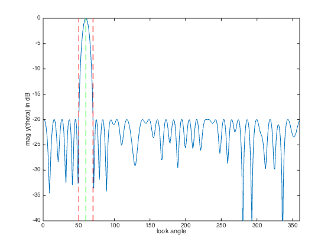
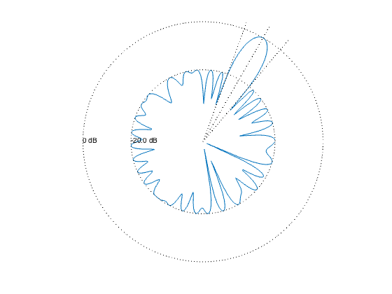

% "Convex optimization examples" lecture notes (EE364) by S. Boyd % "Antenna array pattern synthesis via convex optimization" % by H. Lebret and S. Boyd % (figures are generated) % % Designs an antenna array such that: % - it has unit sensitivity at some target direction % - it obeys a constraint on a minimum sidelobe level outside the beam % - it minimizes the beamwidth of the pattern % % This is a quasiconvex problem and can be solved using a bisection. % % minimize max |y(theta)| for theta outside the beam % s.t. y(theta_tar) = 1 % % where y is the antenna array gain pattern (complex function) and % variables are w (antenna array weights or shading coefficients). % Gain pattern is a linear function of w: y(theta) = w'*a(theta) % for some a(theta) describing antenna array configuration and specs. % % Written for CVX by Almir Mutapcic 02/02/06 % select array geometry ARRAY_GEOMETRY = '2D_RANDOM'; % ARRAY_GEOMETRY = '1D_UNIFORM_LINE'; % ARRAY_GEOMETRY = '2D_UNIFORM_LATTICE'; %******************************************************************** % problem specs %******************************************************************** lambda = 1; % wavelength theta_tar = 60; % target direction min_sidelobe = -20; % maximum sidelobe level in dB max_half_beam = 50; % starting half beamwidth (must be feasible) %******************************************************************** % random array of n antenna elements %******************************************************************** if strcmp( ARRAY_GEOMETRY, '2D_RANDOM' ) % set random seed to repeat experiments rand('state',0); % (uniformly distributed on [0,L]-by-[0,L] square) n = 36; L = 5; loc = L*rand(n,2); %******************************************************************** % uniform 1D array with n elements with inter-element spacing d %******************************************************************** elseif strcmp( ARRAY_GEOMETRY, '1D_UNIFORM_LINE' ) % (unifrom array on a line) n = 30; d = 0.45*lambda; loc = [d*[0:n-1]' zeros(n,1)]; %******************************************************************** % uniform 2D array with m-by-m element with d spacing %******************************************************************** elseif strcmp( ARRAY_GEOMETRY, '2D_UNIFORM_LATTICE' ) m = 6; n = m^2; d = 0.45*lambda; loc = zeros(n,2); for x = 0:m-1 for y = 0:m-1 loc(m*y+x+1,:) = [x y]; end end loc = loc*d; else error('Undefined array geometry') end %******************************************************************** % construct optimization data %******************************************************************** % build matrix A that relates w and y(theta), ie, y = A*w theta = [1:360]'; A = kron(cos(pi*theta/180), loc(:,1)') + kron(sin(pi*theta/180), loc(:,2)'); A = exp(2*pi*i/lambda*A); % target constraint matrix [diff_closest, ind_closest] = min( abs(theta - theta_tar) ); Atar = A(ind_closest,:); %********************************************************************* % use bisection algorithm to solve the problem %********************************************************************* halfbeam_bot = 1; halfbeam_top = max_half_beam; disp('We are only considering integer values of the half beam-width') disp('(since we are sampling the angle with 1 degree resolution).') disp(' ') while( halfbeam_top - halfbeam_bot > 1) % try to find a feasible design for given specs halfbeam_cur = ceil( (halfbeam_top + halfbeam_bot)/2 ); % create optimization matrices for the stopband ind = find(theta <= (theta_tar-halfbeam_cur) | ... theta >= (theta_tar+halfbeam_cur) ); As = A(ind,:); % formulate and solve the feasibility antenna array problem cvx_begin quiet variable w(n) complex % feasibility problem Atar*w == 1; abs(As*w) <= 10^(min_sidelobe/20); cvx_end % bisection if strfind(cvx_status,'Solved') % feasible fprintf(1,'Problem is feasible for half beam-width = %d degress\n',... halfbeam_cur); halfbeam_top = halfbeam_cur; else % not feasible fprintf(1,'Problem is not feasible for half beam-width = %d degress\n',... halfbeam_cur); halfbeam_bot = halfbeam_cur; end end % optimal beamwidth halfbeam = halfbeam_top; fprintf(1,'\nOptimum half beam-width for given specs is %d.\n',halfbeam); % compute the minimum noise design for the optimal beamwidth ind = find(theta <= (theta_tar-halfbeam) | ... theta >= (theta_tar+halfbeam) ); As = A(ind,:); cvx_begin quiet variable w(n) complex minimize( norm( w ) ) subject to Atar*w == 1; abs(As*w) <= 10^(min_sidelobe/20); cvx_end %******************************************************************** % plots %******************************************************************** figure(1), clf plot(loc(:,1),loc(:,2),'o') title('Antenna locations') % plot array pattern y = A*w; figure(2), clf ymin = -40; ymax = 0; plot([1:360], 20*log10(abs(y)), ... [theta_tar theta_tar],[ymin ymax],'g--',... [theta_tar+halfbeam theta_tar+halfbeam],[ymin ymax],'r--',... [theta_tar-halfbeam theta_tar-halfbeam],[ymin ymax],'r--'); xlabel('look angle'), ylabel('mag y(theta) in dB'); axis([0 360 ymin ymax]); % polar plot figure(3), clf zerodB = 50; dBY = 20*log10(abs(y)) + zerodB; plot(dBY.*cos(pi*theta/180), dBY.*sin(pi*theta/180), '-'); axis([-zerodB zerodB -zerodB zerodB]), axis('off'), axis('square') hold on plot(zerodB*cos(pi*theta/180),zerodB*sin(pi*theta/180),'k:') % 0 dB plot( (min_sidelobe + zerodB)*cos(pi*theta/180), ... (min_sidelobe + zerodB)*sin(pi*theta/180),'k:') % min level text(-zerodB,0,'0 dB') text(-(min_sidelobe + zerodB),0,sprintf('%0.1f dB',min_sidelobe)); theta_1 = theta_tar+halfbeam; theta_2 = theta_tar-halfbeam; plot([0 55*cos(theta_tar*pi/180)], [0 55*sin(theta_tar*pi/180)], 'k:') plot([0 55*cos(theta_1*pi/180)], [0 55*sin(theta_1*pi/180)], 'k:') plot([0 55*cos(theta_2*pi/180)], [0 55*sin(theta_2*pi/180)], 'k:') hold off
We are only considering integer values of the half beam-width (since we are sampling the angle with 1 degree resolution). Problem is feasible for half beam-width = 26 degress Problem is feasible for half beam-width = 14 degress Problem is not feasible for half beam-width = 8 degress Problem is feasible for half beam-width = 11 degress Problem is feasible for half beam-width = 10 degress Problem is not feasible for half beam-width = 9 degress Optimum half beam-width for given specs is 10.
  